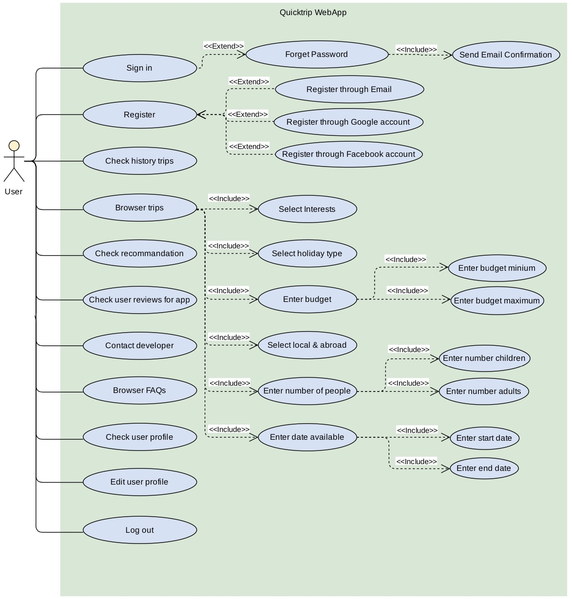
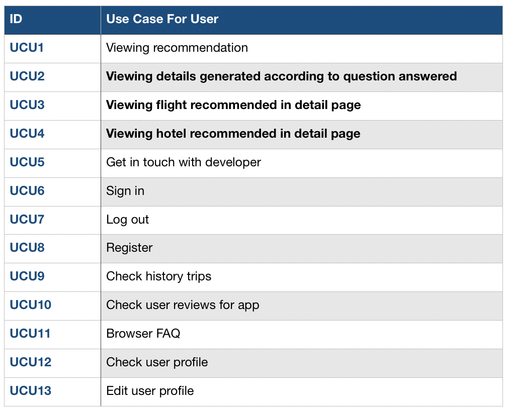
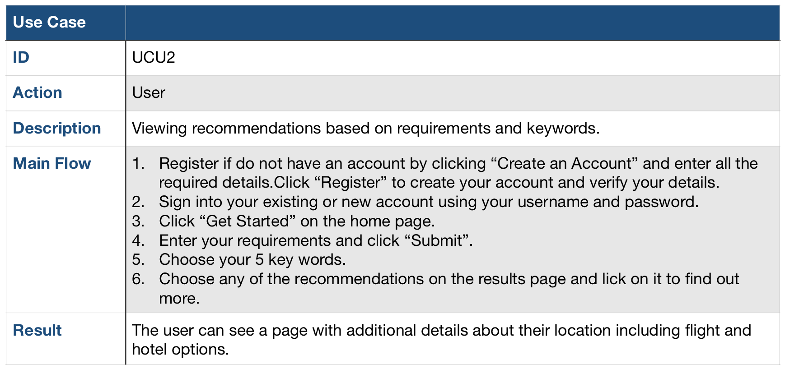
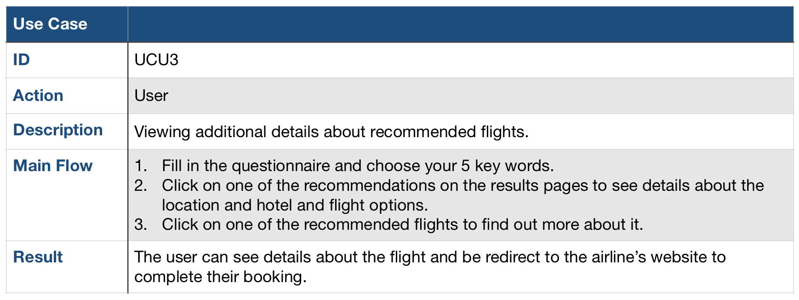
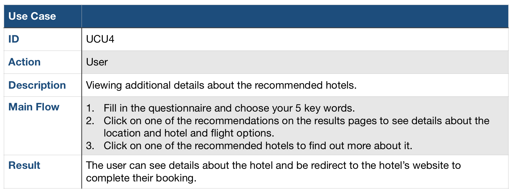

Project Background
We were given the task to design an application that helps users book a holiday based on their needs and specifications.
The application takes in 5 keywords and the user’s requirements in order to generate a personalised holiday.
The user will be presented with a description of the location, links to hotels and flights within the user’s budget as well as information about the location that’s being suggested to them.
This will enable the user to book trips both quickly and easily through the use of our intuitive UI and large data sources.
Gathering User Requirements
After evaluating the different methods of capturing requirements, we decided to conduct a semi-structured interview as it allows us to go in-depth and probe where necessary.
After several interviews, we concluded that our users could be roughly divided in two groups by different main goal of using QuickTrips app, which are ‘Budget Travellers' and ‘Indecisive Travellers’. The pictures below are two sample responses, one each from our from each group.
The pictures below are two sample responses, one each from our from each group.
From a budget traveller:
- What’s the hardest part of planning a trip?
- Finding something within my budget.
- If you had to choose between shortening your trip or changing your destination as the trip was costing too much which would you sacrifice?
- I try to avoid travelling to expensive cities, however if I did really like to destination I would prefer shortening my trip. It would be great if there was an application which would help me find me a package at a better value so that I don’t have to sacrifice either.
- Are you more likely to be booking your trips while at home or while out?
- I would normally do my bookings at home.
- What apps do you normally use when you start planning a trip?
- Skyscanner, Airbnb and Expedia.
- What features do you think would be useful in a new travel app?
- The ability to personalize recommended travel locations based on interests and specific requirements.
From an indecisive traveller:
- What’s the hardest part of planning a trip?
- Choosing a destination. There’s just too many options.
- How will you decide your next travel location?
- I will ask my friends and family for recommendations and choose the most popular location based on the type of trip I’m planning: with family, with friends or solo.
- When are you most likely to travel?
- During my kids holidays or whenever I get time off work.
- What apps do you normally use when you start planning a trip?
- Skyscanner, Airbnb and Expedia. However, this just confuses me as there’s far too many places to choose from.
- How many times do you travel a year, locally or abroad?
- Normally twice a year. Once abroad and once locally.
- What features do you think would be useful in a new travel app?
- A button to generate a random holiday between dates I choose. This would help me explore the world further and see new countries.
Persona
Base on all user requirement data collected from interviews, we construct three Personas & Scenarios with two different types to have a clearer understanding of users and compact format of their complex needs and requirements.
Project Goals
-The aims of our project are:
To have an intuitive UI which is easy to use and navigate through
The ability for the user to create an account to keep track of recommendations, favourited locations and past trips.
The ability for the user to choose 5 key words and enter their requirements including budget, available dates and group size to generate personalised holiday recommendations.
The ability for the user to select a local holiday or one abroad.
The ability for the user to be presented with a range of accommodation and travel options within their budget to choose from.
The ability to generate further recommendations if they don’t like the ones that they were initially presented with.
MoSCoW requirement list
Use cases
Use case diagram
List of use cases
Use case Examples
  